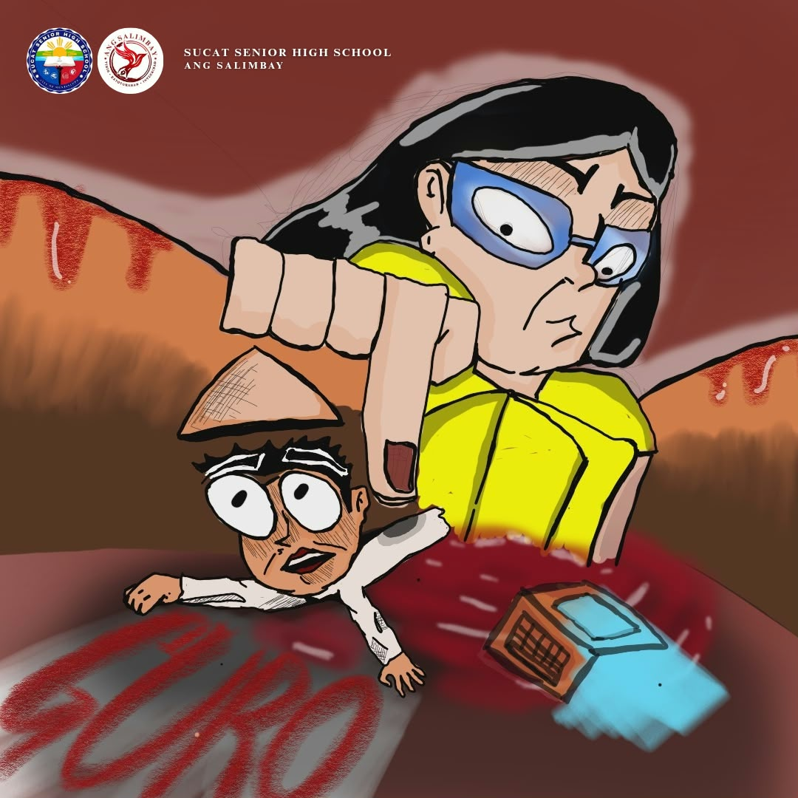
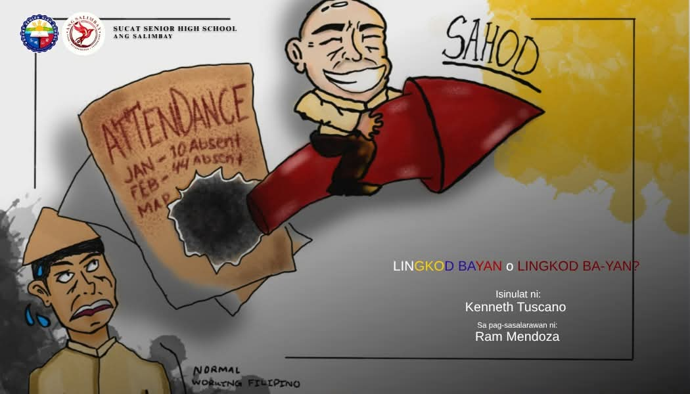
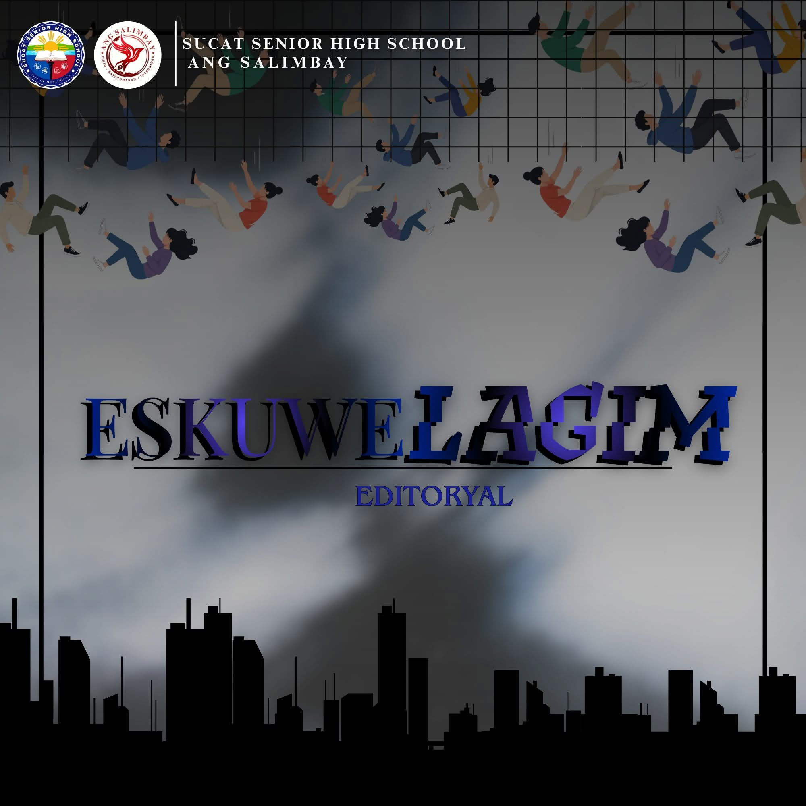

Opisyal na Pahayagang Filipino ng Sucat Senior High School
Ang seksyong Editoryal at Kolum ng Ang Salimbay ay naglalaman ng mga pananaw, pagsusuri, at komentaryong nagbibigay-liwanag sa mga napapanahong isyu. Layunin nitong hikayatin ang kritikal na pag-iisip at pagbibigay ng makabuluhang opinyon tungkol sa mga pangyayari sa paaralan at lipunan.


